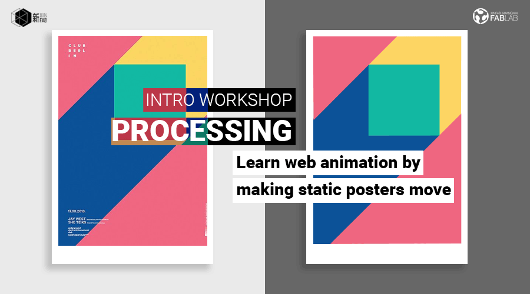

WORKSHOP
CODE YOUR OWN WEBSITE (INTRO TO HTML AND CSS)

When: Saturday, March 10, from 2pm to 6pm
Where: Xinfab - Kangding East Rd, Lane 45, Building no.5, Room 102, Jing'an District
Price: Special inauguration price 200 RMB (Wechat 210 RMB)
Have you ever visited a website with some really cool effects and animations and wondered how that is done?
Join us on Saturday, March 10, to learn how to make animations by coding. Katie is going to introduce you to a programming language called “Processing”. Processing is an open source programming language for the electronic arts, new media art, and visual design communities.
During this workshop, Katie will walk you through Processing basics by turning static posters into animated ones.
We will start with some basic programming knowledge, including, variables, functions, learn about the setup( ) and draw( ) function in p5.js, shapes and colors. We will then start to recreate the posters in code. We will also cover how to animate shapes and introduce movement. We will code together on p5.js web editor - you will be able to instantly see the result of your code rendered on the fly!
**Requirements:No previous coding knowledge is needed (basic HTML or CSS is highly recommended), but you do need to be familiar with how to use a computer (in other words, Windows or iOS don't scare you and you understand basic commands like Ctrl C+Ctrl V).
Things you should bring:
// Your laptop and charger
// Mouse (this workshop can’t be followed without a mouse)
// Install Processing IDE (free software) in your laptop before you come! (https://processing.org/download/)
// Bring all you remember from your geometry class from high school! (don't worry if you don't remember much)
// Your passion, curiosity, and questions
Here's an example of what we'll do:
1. We'll go from a static poster (image) like this one:
2. To the dynamic version of it made with only coding:
CLICK HERE TO SEE KATIE'S EXAMPLE (Click on play to generate the animation)
WORKSHOP SCHEDULE
// PART 1 - GETTING FAMILIAR WITH PROCESSING
_Intro to basic concepts
_Variables, functions, setup( ) and draw( ) function in p5.js
_Shapes and Colors
// PART 2 - LIVE CODING THE POSTERS
_Transform static images into dynamic ones together with Katie
_Troubleshooting
_Going forward: Resources and links
///////////////////////////////////
HOW TO SIGN UP
SIGN UP DEADLINE: MARCH 9
// ALIPAY (200 RMB)
transfer the workshop fee to pay@xinfab.com (please indicate your phone number on the payment details so we can contact you!)
// WECHAT (210 RMB - Wechat charges us a fee)
Enter our shop with your phone via this link and proceed to payment with Wechat Wallet
// CASH (200 RMB)
Come by our lab during our opening hours to book your spot. (You can also just come when the workshop starts, but we cannot guarantee there will be a spot left for you.)
Questions? Send an email to info@xinfab.com.
///////////////////////////////////
ABOUT THE TEACHER

Katie Chen is a Chinese Interactive Media Arts major with a focus on combining coding and design at New York University Shanghai. Katie has been coding intensively for about a year and half now and she can write in HTML, CSS and processing (p5 js) as well - a graphic programming language that's gotten popular over the past couple of years. Among the many things she has done, she has developed a drumming game (graphics in processing, Arduino and sensors for the physical reactions). Katie can create really cool animations just by typing commands. Aside from being a part of her formal education, coding is one of Katie's favorite hobbies.
时间：3月10日星期六从下午2：00到6：00
地点： 新Fab- 静安区康定东路45弄5号102室
价格： 200元（微信210元）
你有没有访问过一些非常酷的效果和动画的网站，并想知道如何做到这一点？
加入我们于3月10日星期六，学习如何通过编码制作动画。 Katie将向您介绍一种名为“Processing”的编程语言。 Processing是电子艺术，新媒体艺术和视觉设计社区的开源编程语言。
在本次车间期间，Katie将通过将静态海报转化为动画形式向您介绍处理基础知识。
我们将从一些基本的编程知识开始，包括变量，函数，了解p5.js中的setup（）和draw（）函数，形状和颜色。 然后，我们将开始在代码中重新创建海报。 我们还将介绍如何制作动画。 我们将在p5.js网页编辑器上一起编码 - 您将能够即时看到您的代码在飞行中呈现的结果！
要求：不需要以前的编码知识，但强烈建议使用基本的HTML或CSS。你需要熟悉如何使用计算机（换句话说，Windows或iOS不会吓到你，并且你了解Ctrl C + Ctrl V等基本命令）。
你应该带的东西：
// 笔记本和充电器
// 鼠标（推荐）
// 你来之前在你的笔记本电脑上安装Processing IDE (免费）。 （这里免费下载：https://processing.org/download/)
// 你的激情，好奇心和问题
///////////////////////////////////
如何注册
注册截止日期：3月9日（星期五）
// 支付宝（200 RMB）
将研讨会费用转至 pay@xinfab.com（请在付款明细上注明您的电话号码，以便我们与您联系！）
// 现金（200 RMB)
由我们的实验室在我们的开放时间来预订你的位置。
// 微信（210 RMB - 微信收费）
有问题吗？ 发邮件到info@xinfab.com.
///////////////////////////////////
关于教师们
Katie Chen是中国互动媒体艺术专业，专注于纽约大学上海编码与设计相结合。 凯蒂一直致力于大约一年半的编码工作，她还可以编写HTML，CSS和处理（p5 js） - 一种在过去几年中流行的图形编程语言。 在她所做的很多事情中，她开发了一个打鼓游戏（加工图形，Arduino和物理反应传感器）。 凯蒂可以通过输入命令创建非常酷的动画。 除了成为正规教育的一部分之外，编码和动画是凯蒂最喜欢的爱好。